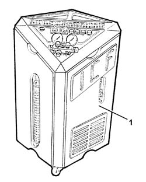
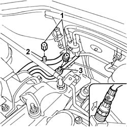
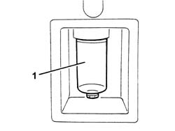

5040A10 Air conditioning refrigerant CIRCUIT - Draining and Refilling
- Path
- Procedures > 50 AUXILIARY UNITS > 5040 AIR CONDITIONING CASING AND COMPONENTS > 5040A air conditioner coolant circuit > 5040A10 Air conditioning refrigerant CIRCUIT - Draining and Refilling
- Kind
- repair procedure (removal / refitting; the operation number is the code)
- Applies to
- all engines; all production periods
- Interactive page
- https://sloeber94.github.io/elrnDB-fDbl/en/#/2584819
Applies to: all engines; all production periods
Applies to: all engines; all production periods
1. Use the special draining/repressurizing equipment.

Applies to: all engines; all production periods
Let the engine run with the air conditioning switched on for 10 - 15 minutes.
1. Undo the repressurizing valve plugs.
2. Connect the high pressure connecting pipe (HIGH) to the corresponding rapid attachment valve.
3. Connect the low pressure connecting pipe (LOW) to the corresponding rapid attachment valve.

Applies to: all engines; all production periods
Start the procedure for draining the coolant fluid, following the instructions in the equipment manual.
1. Whilst draining the system, the fluid removed from the compressor should be collected in a special container.

Applies to: all engines; all production periods
Refill the system with the same amount of recommended fluid shown on the container.
 | Type | Component | Name | Qty. |
|---|---|---|---|---|
- | Oil | AIR CONDITIONER ASSEMBLY COMPRESSOR | ND OIL 8 | - |
If certain components are replaced, the following quantities of fluid must be added for each of the components replaced:
- drier filter 15cm3
- pipes 5 cm3 /m
- evaporator 40cm3
- condenser 40 cm3 .
In the case of accidental breakages which result in the rapid draining of the system (in less than 5 minutes), it is not possible to determine the exact amount of fluid which has escaped because of the high pressure of the fluid. In these cases, add around 50 cm 3 of fluid.
Start the coolant fluid repressuring procedure, following the instructions in the equipment manual.
Introduce the recommended quantity of coolant fluid.
| Type | Component | Name | Qty. |
|---|---|---|---|---|
- | Fluid (g) | Air conditioning system | R134A | 600 ± 40 |
In the case of damage to the compressor or other system components followed prolonged exposure to the air of the pipes (more than 6 hours), the system 'WASHING' procedure has to be carried out, proceeding as follows.
Clean the pipes connected to the compressor using an air line.
Connect the (drained) sysem to the repressurizing equipment.
Introduce the recommended quantity of coolant fluid at the high pressure side and recover it from the low pressure side.
Repeat the introduction and recover the fluid.
Proceed with the system draining and repressurizing operations as described previously.
Refill the system with the specified fluid; as a guide add the quantity stated in the table.
| Type | Component | Name | Qty. |
|---|---|---|---|---|
- | Oil | AIR CONDITIONER ASSEMBLY COMPRESSOR | ND OIL 8 | 130 c.c |
Topics linked from this page (1)
Topics that link to this page (36)
- L10 CLIMATE CONTROL NOT COOLING
- L12 CLIMATE CONTROL TOO COLD
- 5040DA Check connection between steering column switch unit and climate control unit
- 0510A20 timing gear with belt drive - check - carry out operation with cam cover(s) removed and tappets adjusted
- 0510A30 cam lift - check with cam cover(s) removed
- 1004B10 POWER UNIT WITH MANUAL GEARBOX - R.R
- 1004B12 power unit with manual gearbox - r+r for versions with a/c
- 1020A20 crank case oil sump - r + r clean seals for sealant application
- 1020D26 flywheel side oil seal cover - r+r
- 1024B10 engine flywheel - r + r for versions with manual gearbox
- 1042B10 CNG supply PIPE from solenoid valve to pressure reduction unit - R.R.
- 1040B32 front fuel delivery line - r r
- 1040B54 fuel line from manifolds - r r
- 1060E40 supplementary pressure pump - r r
- 1072B50 sleeves connecting air capacity box to inlet manifold is - r+r
- 1084B26 emgine oil intake duct - r r
- 1088B24 engine cooling radiator - r r for air conditioned versions
- 1088B26 Engine cooling radiator AIR DUCT PROTECTION/ - R.R.
- 1810A20 clutch - r + r
- 2110A10 manual gearbox and differential - r + r
- 5040A14 air conditioner cooling circuit - check and repair any leaks by tightening fittings
- 5040A20 air conditioner compressor - r+r - includes fluid level check and top up if necessary
- 5040A26 compressor mount - r r
- 5040A40 air conditioner condenser - r+r
- 5040A44 air conditioner dehydrating filter/accumulator - r+r
- 5040A50 pipe from compressor to air conditioner condenser - r+r
- 5040A52 pipe from condenser to dehydrating filter - r+r
- 5040A54 pipe from dehydrating filter to expansion valve - r+r
- 5040A72 evaporator outlet pipe - r r
- 5040A73 compressor inlet pipe - r r
- 5040B14 air conditioner system multi-level pressure switch - r+r
- 5040B22 air conditioning system de-mister thermostat - r+r
- 5040B30 expansion valve (tube orifice) - r+r
- 5040C12 air conditioner housing - r r with facia disconnected
- 5040C50 air conditioner heater radiator - r+r
- 5040C64 a/c evaporator - r+r